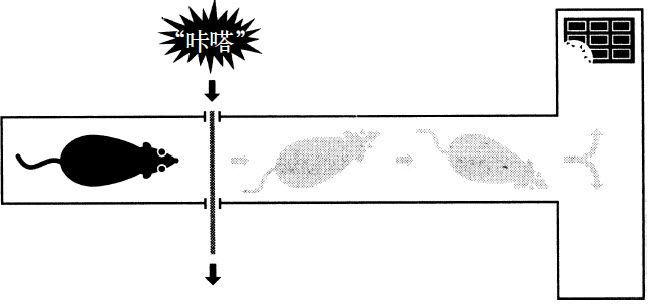
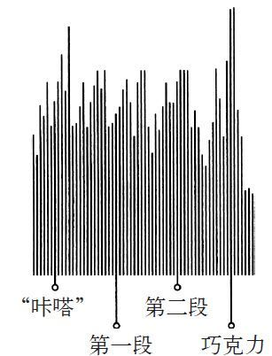
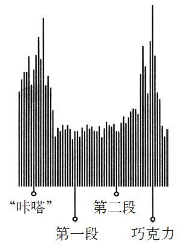
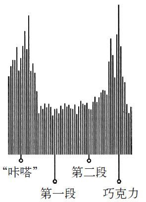
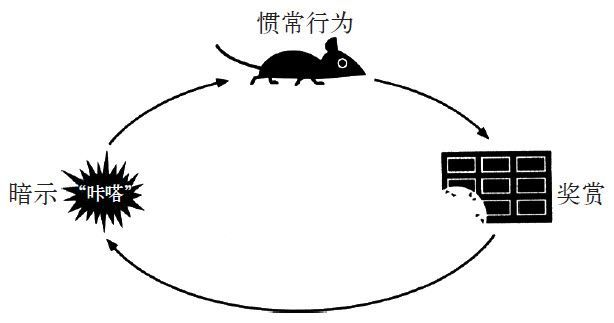
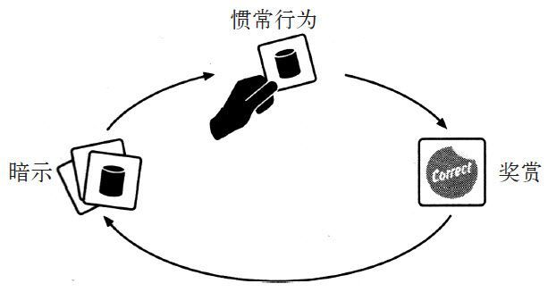

1993年秋，一个人走进了圣迭戈加州大学的一间实验室。这是一次安排好的会面，这次会面将颠覆我们对习惯的认识。这个人年纪比较大，身高6英尺[1]，穿着领尖有蓝色纽扣的衬衫。随便哪个50岁阶段的高中聚会，与会者都会羡慕他那一头浓密的白发。关节炎让他在实验室的过道上显得有些蹒跚，他牵着妻子的手，慢慢地走着，好像对下一步会怎样毫无信心。
大约在一年前，这位后来在医学文献中广为人知的尤金·保利，正待在普莱亚岱瑞的家中，准备着晚餐，这时他的妻子告诉他，他们的儿子迈克尔要来了。
尤金问道：“谁是迈克尔？”
他的妻子贝弗利说：“你的孩子啊，你知道的，就是我们养大的那个。”
尤金茫然地看着她，问：“那是谁？”
第二天，尤金开始呕吐，腹部的绞痛让他满地打滚。不到24小时，他的脱水情况已经非常严重，吓坏了的贝弗利带着他去了急症室。尤金的体温开始上升，达到了40.6摄氏度。他浑身大汗，医院的床单上留下了他的大片汗渍。他变得神志不清，还有些暴躁，护士在给他的手臂进行静脉注射的时候，他朝着护士大吼大叫，推推搡搡。在镇静剂发挥作用之后，医生在他后背的两块脊柱之间插入一根长长的针，抽取了脑脊髓液。
医生在抽取脑脊髓液的时候立刻就意识到了问题。大脑和脊椎神经周围的液体是保护人体免受感染和伤害的。如果人健康的话，液体澄清而且流动很快，会在针的周围形成顺滑的移动感。而尤金脊椎里的液体样本浑浊，并且很黏稠，好像里面混杂了特别小的沙砾。在化验结果出来时，尤金的医生弄清楚了他的病情：他得了病毒性脑炎，这种病是由一种无害的，会引发唇疱疹以及皮肤轻微感染的病毒造成的。不过，这种病毒极少会进入大脑，而一旦进入脑，在入侵脑组织后，会对我们的思想、梦境，还有某些人认为的灵魂寄居的地方造成灾难性的伤害。
尤金的医生告诉贝弗利，他们没办法修复已经造成的损伤，但是大剂量的抗病毒药物也许可以阻止病毒扩散。尤金昏迷了10天，濒临死亡。随着药物渐渐起效，他的烧退了，病毒也消失了。他最终醒来时，十分虚弱，整个人精神恍惚，也没法好好吃东西。他的语言能力受到了影响，有时候还上气不接下气，好像突然忘了怎么呼吸，但是他还活着。最终，尤金恢复了一些，医生给他作了一系列测试。医生惊讶地发现尤金的身体，包括他的神经系统，基本上都安然无恙。他的四肢可以动，对噪音和光也有反应。不过在作过头部扫描之后，医生发现他大脑的中心区附近有阴影，这不由得让人担心。病毒已经摧毁了颅骨和脊椎交汇处一块椭圆形的脑组织。医生警告贝弗利说：“他也许不是你认识的那个人了，如果他不再是你以前的丈夫，你得作好准备。”尤金被推进了医院的另一头。不到一周，他的吞咽功能恢复了。又过了一周，他的语言能力恢复正常，说要吃果冻和盐，看电视时会换台，抱怨说肥皂剧太无聊。5周后，他被送到了康复中心，这时他已经能在走廊里散步，而且不管护士想不想听，一个劲儿地建议说周末应该怎么过。
一位医生告诉贝弗利：“我从没见过有人能康复成这样，我不想让您抱太大的希望，但这太令人惊讶了。”不过贝弗利还是很担心，在康复中心，可以很清楚地看到这次得病改变了她的丈夫。比如，每个星期尤金都搞不清日子；不管医生和护士们自我介绍了多少次，他依然记不得他们的名字。有一天，医生离开了房间，尤金莫名其妙地问贝弗利：“你干吗老问我这些问题？”等他出院回家，事情就变得更怪异了。尤金似乎记不起自己的朋友们。在交谈时，他没法接上话。有时候在早晨，他会起床，走进厨房给自己煎培根鸡蛋，然后回到被窝，打开收音机。40分钟后，他会把同样的事情再做一遍：起床，煎培根鸡蛋，回到被窝，玩收音机。然后再重复。
贝弗利吓坏了，她去找了专家咨询。其中一位专家是圣迭戈加州大学专门研究记忆丧失的研究人员。在一个阳光明媚的秋日，贝弗利和尤金走进了加州大学里一座没有任何特征的建筑，他们拉着手慢慢地走过走廊。进去之后，研究人员让他们来到一间小的测试间。尤金开始和一位使用电脑的年轻女士攀谈。
尤金对着这位女士使用的电脑比画着说：“当电子工程师这么多年，我一直都对这些东西感到惊奇，我小的时候，这东西还搁好几个6英尺高的架子里，有整个房间那么大。”女士继续敲着键盘，尤金笑着说：“这太不可思议了，所有这些蚀刻的电路，还有那些二极管、三极管，我工作那会儿，这东西需要好几个6英尺高的架子撑着。”这时一位科学家走进了房间，然后作了自我介绍，他让尤金自报年龄。
尤金回答道：“我看看，50岁或60岁吧。”其实他71岁了。
科学家开始在电脑上打字。尤金指着电脑，笑着说：“这真了不起，你知道，我当电子工程师的时候，这东西得用好几个6英尺的架子撑起来呢！”
这名科学家名叫拉里·斯奎尔，52岁，在过去30年里，他一直在研究记忆神经解剖学。他的专长是研究大脑的记忆方式，而他与尤金的合作很快将向他自己和其他成百上千的研究人员打开一个新世界，如今他们已经重塑了我们对习惯运作机理的理解。斯奎尔的研究将让我们看到，即便有些人记不住自己的年龄或者几乎什么都记不住，但身上依然会出现看上去复杂得不可思议的各种习惯，你会意识到所有人每天都在依赖相似的神经过程生活。他和其他人的研究，有助于揭示影响众多选择的潜意识背后的机理。从表面上看，这些选择都是理性思考的产物，但实际上是我们大部分人几乎没有注意到或不能理解的欲望在发挥着影响。
斯奎尔与尤金会面时，斯奎尔已经花了几周时间研究他的大脑扫描图。扫描图显示尤金颅骨内几乎所有受到损伤的地方，都集中在脑中央5厘米大小的区域。病毒几乎完全摧毁了他的内侧颞叶，这部分由白色的脑细胞组成，科学家怀疑它管理着人类的所有认知活动，比如回忆过去以及对某些情绪的控制。这部分完全被破坏并没有让斯奎尔大吃一惊，他知道病毒性脑炎具有几乎外科手术般精准的组织侵蚀能力，而且整个过程毫不留情。让斯奎尔惊讶的是，这些扫描图看起来太熟悉了。
30年前，斯奎尔在麻省理工学院攻读博士，他与一个研究小组共同研究一位被称为“H. M.”的人，这是医学史上最著名的病人之一。这位病人真名叫作亨利·莫莱森，科学家为了保护他的隐私，在他去世前，一直都对外界隐瞒了他的真实身份。亨利·莫莱森在7岁那年被自行车撞倒，头部受伤。很快，他出现了癫痫的症状，开始不时晕厥。到16岁的时候，他第一次癫痫大发作，整个大脑都受到了影响。不久，他开始时常失去知觉，有时一天能达到10次。
到27岁的时候，亨利·莫莱森感到绝望了。抗惊厥药物没有效果。他是个聪明人，但是保不住自己的工作，还和父母住在一起。亨利·莫莱森渴望过正常人的生活。所以他试图找一位能在自己身上进行治疗实验，又不怕医疗事故的医生帮助自己。研究表明，他大脑被称为海马体的这部分可能与癫痫发作有关。后来医生建议给莫莱森做开颅手术，抬高他大脑的前部，然后用一根小管子吸出颅内的海马体以及周围的组织，莫莱森同意了。
手术是1953年做的，莫莱森痊愈后，他的癫痫发作频率降低了。不过，与此同时，他的大脑显然发生了巨大的变化。莫莱森知道自己的名字，知道母亲来自爱尔兰，他能记得1929年的股市崩盘以及诺曼底登陆的有关新闻报道。但手术之前那10年的所有记忆、经历还有磨难都被消除了。医生用扑克牌和数字表测试他的记忆，结果发现莫莱森对新信息的记忆时长不超过20秒。
从手术到2008年去世，莫莱森见过的每个人，听过的每首歌，去过的每个房间，都成了完全新鲜的经历。他的大脑在时间上被冻结。每天他都对别人拿个黑色的长方形塑料块对着电视机就能换台感到大惑不解。他一遍又一遍地将自己介绍给医生和护士，每天重复几十遍。
斯奎尔跟我说：“我喜欢研究亨利·莫莱森，因为记忆似乎是非常实际、让人激动的研究大脑的方式。我在俄亥俄州长大，我能记得一年级的时候，老师给大家发蜡笔，我将所有颜色混在一起，想看看能不能弄出黑色。我为什么会有这段记忆，却记不得老师的模样？为什么我的大脑会认为某段记忆比另一段记忆更重要？”
当斯奎尔拿到尤金的大脑扫描图时，他惊奇地发现这些图和亨利·莫莱森的扫描图太像了。两个人的大脑中间都有一个核桃大小的空穴，尤金的记忆和亨利·莫莱森的一样，都被移除了。
斯奎尔开始给尤金作检查，不过在他眼里，这位病人和亨利·莫莱森有着很大的不同。虽然几乎所有人只要和亨利·莫莱森见面几分钟就知道不对劲，但尤金却能够将对话进行下去，而且做的事情不会让粗心的观察者意识到有什么问题。
亨利·莫莱森手术的效果不太理想，让他下半生一直住在医院里。而尤金则和妻子住在家中。莫莱森基本上没法真正和人对话。相比之下，尤金有一种奇妙的能力，几乎可以将任何对话都转到自己能聊很久的话题上，比如聊聊人造卫星，他以前为航天公司当过技术员；还有天气，这也是个可以聊很久的话题。
斯奎尔开始测试，先问了尤金年轻时候的事情。尤金介绍了他在加州中部的家乡小镇，说了他在商船上的经历，还谈到了他年轻时去澳大利亚旅行的事。他能记得1960年之前生活中发生的大部分事情。当斯奎尔问他近几十年的事情时，尤金礼貌地转换了话题，说他不太能回忆起最近的事。
斯奎尔作了几项智力测验，发现作为一个记不起过去30年生活的成年男性，尤金的智力依然不错。而且，尤金身上依然还有他在年轻时候养成的各种习惯，所以当斯奎尔给他一杯水，或者为他说出细节更丰富的答案而表扬他时，尤金会表示感谢，同样也报以恭维。每次有人进房间时，尤金都会介绍自己，然后寒暄一番。
但当斯奎尔要尤金记住一串数字，或者描述实验室门外的走廊时，这位病人记住的新信息都是一分钟之内的。有人给尤金看他孙辈的照片，他完全认不出他们。斯奎尔问他是否知道自己病了，尤金说他完全不记得自己生病的事，也不记得住院的事。实际上，尤金完全不记得自己有健忘症。他自己的心象（mental image）里根本没有失忆这部分内容，而且因为他不记得自己身上的损伤，所以觉得一切正常。
在与尤金会面的几个月后，斯奎尔做了些实验，测试了尤金的记忆极限。那时，尤金和贝弗利已经从普莱亚岱瑞搬到了圣迭戈，住得离他们的女儿近了些，而斯奎尔则经常去他们家给尤金作测验。有一天，斯奎尔要尤金画一幅他房子的素描。尤金连标出厨房或卧室位置的基本示意图都画不出来。斯奎尔问：“早上起床的时候，你是怎么离开房间的？”尤金说：“你知道的，我真的不晓得。”
斯奎尔在笔记本电脑上作记录，在这位科学家打字时，尤金的注意力转移了，他扫视了房间，然后站了起来，走到了过道，打开了卫生间的门。几分钟后，尤金冲了厕所，洗了手，然后在裤子上擦了擦手，走回到客厅，又坐在斯奎尔边上的椅子上。他耐心地等待斯奎尔问下一个问题。
当时，没有人奇怪为什么一个画不出自己家地图的人可以迅速找到卫生间。但这个问题最终引出了一连串的发现，形成了我们对习惯的力量的理解。这有助于点燃一场如今有成百上千的研究人员投身其中进行钻研的科学革命，这是我们第一次了解影响我们生活的所有习惯。
尤金坐在桌子边，看着斯奎尔的笔记本电脑，对它比画着说道：“这太神奇了，你知道，我以前当电子工程师时，这东西需要好几个6英尺高的架子撑着。”
在搬进新房子的头几周过后，贝弗利试着每天带尤金出去走走。医生告诉她说让尤金锻炼锻炼很重要，而且如果尤金在房子里待得太久的话，贝弗利会被逼得发疯的，因为他老是在无限循环中问同样的问题。所以每天早晨和下午，她都带尤金在街区走一圈，总是一起，也总是走同一条路。
医生们提醒贝弗利，她需要一直观察尤金。他们说如果尤金迷路了，他就永远找不到回家的路。不过有一天早上，贝弗利还在穿衣服，尤金就从前门溜了出去。他喜欢挨个房间游荡，所以贝弗利过了好一阵才发现丈夫不见了。她顿时慌了神，跑到街上仔细寻找，结果看不到他。贝弗利到邻居家，用力地敲窗户。因为小区里的房子看起来差不多，也许尤金糊涂了，进了邻居家。她跑到门口猛按门铃直到有人应门，结果也没找到尤金。她又跑回到街上，一边奔跑，一边在街区里大声喊着尤金的名字，急得哭了起来。要是尤金走上机动车道该怎么办？他应该怎么告诉别人自己住在何处？贝弗利在外面寻找了15分钟，把四处找了个遍，最后她跑回家准备报警。
等她跑回自己家，发现尤金在客厅里，坐在电视机前看着历史频道。尤金看着泪流满面的贝弗利一脸茫然。他说他不记得自己离开过房子，不知道去过哪儿，不理解为什么贝弗利这么伤心。贝弗利看见桌子上摆着一堆松球，和她在街那头邻居家院子里看到的一样，于是凑近去看尤金的手，她发现他的手指上有松汁。这时她确信尤金自己出去走了一圈，游荡到街的另一头，收集了一些纪念品。
而他找到了回家的路。
很快，尤金每天早上都去散步。贝弗利试着要阻止他，但这无济于事。
“即便我告诉他，要他待在房里，他过几分钟就不记得了。”贝弗利告诉我说，“我跟了他几次，想确定他不会迷路，他每一次都能自己回来。”有时候尤金会带着松球或石块回家。有一次他拿了个钱包回来，还有一次是一条小狗。尤金永远都不记得这些东西是哪里来的。
当斯奎尔和助手听说尤金自己出去散步，他们开始怀疑尤金的大脑内有什么在起作用，而这与他的有意识记忆毫无关系。于是他们设计了一项实验，让斯奎尔的一位助手去拜访尤金，并让尤金画一张他所住街区的地图。尤金画不出来。于是这位助手要他画自己房子在街上的位置。尤金画了一点儿，然后就忘了自己要做什么了。助手要他指出哪扇门通向厨房。尤金扫了一眼房间，说自己不知道。于是助手又问尤金如果他饿了会怎么办。尤金站起来，走进了厨房，打开了壁橱，从里面拿了一罐坚果。
那个星期晚些时候，另一个人加入了尤金的日常散步活动。他们一起走了15分钟，在南加州四季如春的环境里，闻着空气中浓郁的紫茉莉香。尤金话不多，但总是在带路，而且好像知道自己在往哪走。他从来都不问方向。等他们走到房子附近的街角时，和尤金一起散步的人问尤金住在哪儿，尤金说：“我确实不知道。”然后他走上自己房子前的人行道，打开了房子前门，进了客厅开电视。对斯奎尔来说，尤金显然在吸收新信息。但是这些信息存在他大脑的什么地方？怎么会有人在说不出厨房位置的时候，却可以进去翻出坚果罐子？在不知道自己家所在时，能找到回家的路？斯奎尔苦思冥想，是不是尤金损坏的大脑中正在形成新的模式？
对一般人来说，麻省理工学院大脑与认知科学系实验室里摆放的东西，让这儿看起来就像是个堆满玩具的手术室。里面有迷你手术刀、迷你钻、迷你锯，尺寸还不到1/4英寸，都连在一只机械手上。甚至手术台都很小，好像是给儿童做手术用的。房间温度保持在凉爽的15.6摄氏度，因为温度低一些能让研究人员的手指在精密操作中保持稳定。在这些实验室中，神经学家切开被麻醉的老鼠的颅骨，将能记录大脑最细微变化的微小传感器植入其颅腔中。老鼠醒来后，几乎不会发觉自己脑袋里有很多极小的线像神经蜘蛛网一样展开。这里的实验室已经成为习惯形成科学领域一场静悄悄的革命发动的中心，在这里展开的实验揭示了为什么尤金以及你、我、他能够形成每天都需要的习惯。实验室在老鼠身上做的实验，让我们看到了大脑中错综复杂的奥秘，不管你是刷牙还是在院子里的车道上把车倒出来，大脑中都会出现复杂的变化。对斯奎尔来说，这些实验室帮助他了解了尤金是如何养成新习惯的。
当麻省理工学院的研究人员在20世纪90年代开始研究习惯这一课题时，也是在这个时间段，尤金出现了发烧的症状。研究人员对被称为基底核的神经组织中心十分好奇。你可以将人的大脑想象成一颗洋葱，由一层又一层的细胞组成，然后是离头皮最近的外层部分，从进化的角度来看，这部分通常是最近才产生的。你要是梦见新发明或者被朋友的笑话逗乐，这是你大脑的外层部分在工作，也是思维产生的最复杂的地方。
在大脑深处，靠近脑干，也就是脊柱和大脑结合的位置，这里有着更老、更原始的结构，它们控制着你的自动行为，比如呼吸和吞咽，有人从灌木丛后面跳出来时，你的那种惊吓的反应也是源自这里。大脑骨的中心是一个高尔夫球大小的组织块，这个组织块与在鱼类、爬行动物或哺乳动物脑部的一样，这就是基底核，是细胞组成的一个椭圆形组织。多年来，科学家对其并不十分了解，但是他们怀疑基底核与帕金森氏综合征之类的疾病有关系。
20世纪90年代，麻省理工学院的研究人员开始思考基底核是否也与人的习惯紧密相关。他们注意到基底核受伤的动物会突然不知道如何通过迷宫，或者不记得怎样打开装有食物的容器。于是研究人员决定用新的微缩技术来进行观察极其微小的细节，看看老鼠在进行一些日常活动时，大脑中都有什么变化。经过手术，每只老鼠的颅腔中都被植入了一种像很小的游戏摇杆的装置和一堆细电线。之后，研究人员将老鼠放到了T形的迷宫中并在另一端摆了一块巧克力。

迷宫的结构设置是让所有的老鼠先待在隔板之后，前面的隔板打开时会有很大的咔嗒声。老鼠听到这声音，看到隔板消失了，通常会在中央走廊里游荡一阵，嗅嗅各个角落，挠挠墙壁。它似乎闻到了巧克力味儿，但是不知道怎么找到巧克力。等它到达T型的前端时，一般都会向右转，远离巧克力，然后再往回走，有时候会没有任何明显原因地停下来。最终，它们中的大多数都发现了迷宫里的奖励。但是在它们的兜兜转转中，没有能让人察觉出的模式，好像每一只老鼠都在从容不迫、不假思索地闲逛。
不过老鼠颅内的装置告诉我们实际情况并非如此。老鼠在迷宫里四处走动时，它的大脑，尤其是基底核，工作得非常卖力。每一次老鼠嗅气味或挠墙时，它的大脑都非常活跃，好像是在分析每一种新味道、画面以及声音。老鼠在迷宫里蜿蜒而行时，一直在处理新接收到的信息。
科学家不断重复这个实验。迷宫里同样的路老鼠走了几百次，研究人员观察着每一只老鼠大脑活动的变化。一连串的变化慢慢地出现了。老鼠停下来嗅各个角落，然后选了错误的方向转弯，它们穿过迷宫的速度越来越快，在它们的大脑内部，有些意料之外的事情发生了：随着每只老鼠学会如何穿越迷宫，它们的思维活动开始减弱。老鼠们的行进路线变得越来越自动化，每只老鼠的思考越来越少。
仿佛是头几次老鼠在探索迷宫，大脑必须全力工作来分析新信息，而经过几天重复走同一条路之后，老鼠不再需要去挠墙或去嗅周围的气味儿了，所以与抓挠以及嗅闻相关的脑部活动停了下来。老鼠不需要去选择怎么转弯，于是大脑的决策中心偃旗息鼓，它此时要做的就是回忆起找到巧克力的最快路径。不到一周，甚至和记忆有关的大脑结构都停止了活动。老鼠已经将在迷宫中快速通过的路线变成了自身的一部分，几乎都不需要去思考。
这种思维习惯化，也就是跑直线、左转、吃巧克力的活动，靠的是大脑的基底核，老鼠颅内的探测器表明了这一点。随着老鼠跑得越来越快，大脑工作得越来越少，基底核这一微小、原始的神经结构似乎取代了大脑的工作。基底核是回忆行为模式以及依此行动的核心，换言之，基底核甚至在大脑其他部分沉睡时都在存储生物的习惯。
要想看到这种能力是如何工作的，请看图1.2，它展示了老鼠第一次接触迷宫时大脑的活动。一开始，大脑在整个过程中都十分活跃。

一周之后，一旦老鼠熟悉了路线，急速前进变成了一种习惯，老鼠在穿过迷宫时，大脑没有什么活动。

这个过程被称为“组块化”，也就是大脑将一系列行为变成一种自动的惯常行为，而这是习惯形成的基础。我们每天的生活就靠这些行为组块（数量没有几百，也有几十）。有些很简单——你在把牙刷放进嘴里之前会习惯性地抹牙膏上去；有些则复杂一些，比如穿衣服或者给孩子准备午餐。
一些行为过于复杂，所以经过百万年进化的身体组织能将这一切变成习惯，这实在是太了不起了。就说在院子的车道上把车倒出来这个例子。刚学会开车时，你倒车时是全神贯注的：你得打开车库，开车门，调好座位，把钥匙插进去，然后顺时针转动，调一调后视镜，查看有没有障碍物，接着把脚放在刹车上，挂上倒挡，脚从刹车上移开，心理估算着车库和街道的距离，同时控制速度并注意靠近的车辆。这时，要计算保险杠与镜子里看到的东西、垃圾桶还有篱笆的距离，同时在油门或刹车上稍稍用力，而且很可能还要跟坐在你车里的人说别开收音机。熟悉了之后，你每次把车开上街几乎都不用去细想。这种惯常的活动以习惯的形式发生了。每天有数百万人在做这种复杂的活动而不假思索，因为你一把车钥匙掏出来，我们的基底核就开始工作，找出我们存储在大脑中的与将车倒出来开到街上有关的习惯。一旦习惯开始发挥作用，大脑的灰质就会平静下来，或者去进行其他的思考活动，这也是为什么我们有足够的脑力去意识到某人把自己的午餐盒忘在了屋子里。
科学家说习惯之所以出现，是因为大脑一直在寻找可以省力的方式。如果让大脑自由发挥，那大脑就会让几乎所有的惯常行为活动变成习惯，因为习惯能让大脑得到更多的休息。这种省力的本能是一大优势。工作高效的大脑需要的空间更少，人的头部也会更小，这样的孩子在出生时更容易，因此也会降低婴儿和母亲的死亡率。同样，这样的大脑还能让我们不用再思考基本的行为，比如走路以及选择吃什么，所以人就有更多的脑力来发明长矛、灌溉系统，最终发明出飞机和电视游戏。但保留脑力也是件麻烦的事，因为如果人的大脑在错误的时候停工，我们就可能错过重要的事情，比如没有发现躲在灌木丛中的食肉动物或者上街的时候无法躲过超速的汽车。所以人大脑的基底核发展出了一套聪明的系统，能够决定什么时候让习惯来取代其他活动模式，什么时候让组块行为开始或停止。要想知道它是怎么运作的，请仔细地观察老鼠的神经习惯，注意老鼠大脑最活跃的时候，也就是老鼠刚刚进入迷宫时，老鼠在隔板移动前听到咔嗒声时，以及在迷宫末端，它发现巧克力时。

波峰出现的时候,是大脑在决定将控制权让给习惯以及选择什么习惯的时候。比如在隔板后面，老鼠很难知道自己是否对这个迷宫熟悉，或者这块看起来陌生的板子后面是否还躲着一只猫。要处理这种不确定感，大脑一开始会耗费大量脑力，习惯性地去寻找可以让自己决定应该使用哪个模式的线索。在隔板后的老鼠如果听到了咔嗒声，它就知道应该使用走迷宫的习惯了。如果听到一声猫叫，那它就会选择不同的模式。在活动结束的时候出现了奖品，老鼠的大脑就会醒过来，然后作判断，确定所有的东西都在按照预期发展。
我们大脑中的这个过程是一个由三步组成的回路。第一步，存在着一个暗示，能让大脑进入某种自动行为模式，并决定使用哪种习惯。第二步，存在一个惯常行为，这可以是身体、思维或情感方面的。第三步则是奖赏，这让你的大脑辨别出是否应该记下这个回路，以备将来之用。

慢慢地，这个由暗示、惯常行为、奖赏组成的回路变得越来越自动化。线索和奖赏交织在一起，直到强烈的参与意识与欲望出现。最终，不管是在麻省理工学院的实验室里，还是在你家院子的车道上，习惯诞生了。
习惯并非确定不变的，在后两个章节中可以看到，习惯是可以被忽略、改变或者替换的。但是发现习惯回路太重要了，因为它揭示了一个基本的事实，就是在习惯出现时，大脑不再完全参与决策，它要么完全静下来，要么集中做其他的任务。所以除非你可以抵制习惯，找到新的惯常行为，不然习惯模式依旧会自动展开。
简单地了解习惯的运作原理，了解习惯回路的结构，能让我们更轻松地去控制它。一旦你将习惯分解开，你就可以调控它了。
麻省理工学院的科学家安·格雷比尔主持了很多大脑基底核实验，她说：“我们做过实验，训练老鼠一直走迷宫，直到这变成一种习惯，然后我们通过改变奖品的位置来消灭这种习惯。之后有一天，我们把奖品放回老地方，再把老鼠放进去，然后，天呐，老鼠的老习惯又立刻出现了。习惯从来都不会消失，它们已经被嵌入了大脑的结构中，而这对我们来说是莫大的优势，因为如果我们每次放完假后都要重新学习如何开车，那可就太糟糕了。问题是你的大脑无法分别好习惯和坏习惯，所以如果你有一个习惯，那么这个习惯会一直蛰伏在你的大脑内，等待正确的暗示和奖品的出现。”
这解释了为什么很难创造出锻炼的习惯或者饮食习惯。一旦你养成了长时间坐在沙发上而不是跑步的习惯，或者养成了每次经过装甜甜圈的盒子都要拿一块的习惯，那这些行为模式就永远留在了大脑内。不过，同理，如果我们学会去创造可以压制这些习惯引发的常规神经活动，也就是控制习惯回路的话，我们就可以把坏习惯压制到幕后，就像丽莎·艾伦在开罗之旅后做的那样。而且研究表明，一旦新模式诞生，那么跑步锻炼或者对甜甜圈视而不见就会像其他习惯一样变成自然而然的活动。
没有习惯回路，人的大脑就会停止工作，日常生活中的琐事将占据一切。
因为受伤或疾病而导致基底核受损的人，往往会变得思维麻痹。他们在进行诸如开门或决定吃什么这样的基本活动时会遇到麻烦。他们没办法去忽视那些微不足道的细节。有研究发现，基底核受损的病人无法辨认人的面部表情，不管是恐惧还是恶心，他们就是识别不出，因为这些人永远都无法确定自己应该盯着脸的哪部分看。没有了基底核，人就无法调出我们日常生活需要依靠的数百种习惯。你在某个早晨有愣住去想是应该先系左边鞋带还是右边鞋带吗？你有纠结过应该洗澡前刷牙还是洗澡后刷牙吗？
当然，那些决定都是习惯性的，不需要消耗脑力。只要你的基底核完整无缺，习惯性的暗示就会不断出现，行为也会在你不用思考的情况下发生（不过你度假时，你穿衣服的方式可能会不同，或者在早晨进行惯常活动时，刷牙的时间会不同，但自己却不知道）。
与此同时，大脑依赖自动化的惯常行为也是有风险的。习惯往往有利有弊。
拿尤金作为例子来看，在他失去记忆后，习惯让他能够正常生活，然后习惯也产生了很大的负面影响。
研究记忆的专家拉里·斯奎尔在尤金身上花的时间越来越多，他开始相信尤金在学习新的行为。尤金的大脑扫描图显示他的基底核不再受病毒性脑炎的伤害。斯奎尔于是想，像尤金这样大脑严重受损的人还有可能使用暗示—惯常行为—奖赏回路吗？这一原始的神经过程可以解释为什么尤金能在街区里四处走动，还能在厨房里找坚果罐吗？
为了测试尤金是否在形成新的习惯，斯奎尔设计了一个实验。他拿了16个不同的物体，都是有亮色塑料小片的玩具。斯奎尔把它们粘在长方形的硬纸板上，然后将其分成8对：选择A和选择B。每一对都是随机选出的，与之相配的硬纸板后面有一张写着“正确”的贴纸。
尤金坐在桌子旁，研究人员给他一对物品，然后让他选一个。接下来，研究人员要尤金把所选的东西反过来，看看下面有没有写着“正确”的贴纸。这是衡量记忆的惯常做法。因为只有16件物品，而它们总是以同样的8对出现，大部分人都能在几轮之后记住哪些是“正确的”（猴子在8~10天之后可以记住所有标有“正确”的物品）。
然而不管尤金作了多少次测试，他就是无法记住任何一件“正确”的物品。尤金每周内要重复两次这样的实验，每天要看40对。
在实验开始后，过了几周，一位研究人员在一次实验开始时问尤金：“你知道自己今天为什么要来吗？”
尤金说：“我不知道。”
研究人员说：“我们要向你展示一些东西，你知道原因吧？”
尤金完全记不得之前做过的全部实验，他说：“我是不是要向你描述这些东西，或者告诉你它们是用来干什么的？”过了几个星期，尤金的表现出现了改善。经过28天的训练，尤金挑出贴有“正确”贴纸的物品的准确率达到了85%。到第36天，他的正确率达到了95%。在一次测试之后，尤金看着研究人员，对自己的成功莫名其妙。
他问研究人员：“我怎么做到的？”
研究人员说：“告诉我你脑子里在想什么，你是不是跟自己说，我记得我见过那个？”尤金指着自己的脑袋回答道：“我不记得，好像是这儿还是哪个地方有反应，然后我的手就去挑了。”
对斯奎尔来说，这是完全合理的。尤金接触到了暗示：一对物品总是以同样的组合出现。
这里头存在这样一个惯常行为：尤金会选择一个物品，并看看后面是不是贴了贴纸，即便他不知道自己为什么要把纸板翻过来看，他也会这样做。然后就是奖赏：在找到贴有“正确”字样的贴纸后的那种满足感。最终，习惯回路出现了。

为了确定他这一模式实际上就是习惯，斯奎尔做了另外一个实验。他将16件物品同时摆在尤金面前，要他把所有贴有“正确”字样的物品都放在一起。
尤金不知道从何下手：“老天爷，我怎么能回忆起这个呢？”他摸到一件物品然后想把它翻过来，研究人员阻止他说：不能这样，你得把所有同类的放在一起。为什么尤金会想把东西都翻过来？尤金解释说：“我觉得，这是个习惯吧。”
尤金没办法成功。这些东西在习惯回路之外呈现时，他就完全弄不清了。
这就是斯奎尔在寻找的证据。实验表明，即便对涉及到的活动或物体的记忆连数秒钟都不到，尤金也有能力形成新的习惯。这解释了尤金每天早上为什么能出去散步，然后还能回家。街上的那些暗示，比如街角的树或者信箱，这些东西在他每次上街时的位置都是固定的，引导他走回自家的前门。这还解释了为什么尤金就算不饿，每天也要吃三次或者四次早餐。只要正确的暗示出现了（比如收音机或者透过玻璃的晨光），尤金就会自动地按照大脑基底核设定的脚本开始活动。
另外，尤金还有其他一些习惯，在主动寻找这些习惯之前，你都不会注意到它们。比如尤金的女儿会经常来看他。她会在客厅里和父亲聊一会儿，然后到厨房去看母亲，接着离开，在出门的时候挥手说再见。尤金在她离开时已经不记得他们之前说了什么，他会生气，觉得她怎么还没跟自己聊一会儿就走了，然后又忘记自己之前生过气。但是情绪化的习惯已经开始了，所以他的怒气会持续，愤怒到他自己都不知道是怎么回事，直到爆发出来。贝弗利告诉我说：“有时候他会砸桌子或者大骂，如果你问为什么，他说不知道，但是很生气！”尤金会踢自己的椅子，或者不管谁进了屋子，他逮谁骂谁。几分钟后，他会笑着聊天气。贝弗利说：“好像一旦这个过程开始了，他就不得不完成整个生气的过程。”斯奎尔的新实验还展示了别的发现：那些习惯是非常脆弱的。如果尤金的暗示有稍稍的变化，那么他的习惯就分崩离析了。比如他好几次在街区里走，如果环境有了变化，市里在整修街道，或者暴风把人行道上吹得一片狼藉，尤金就会迷路，不管他离家有多近，他都找不到回家的路，直到好心的邻居给他指路，告诉他家门在哪儿，他才回到家。如果他的女儿在出门前停下来和他聊上10秒钟，他发火的习惯就永远都不会出现。
斯奎尔在尤金身上做的实验在科学界掀起了一场革命，改变了大家对大脑工作原理的认识——人有可能在对所学的课程或者决策毫无记忆的情况下学会并做出无意识的选择。尤金让我们看到习惯与记忆以及逻辑一样，都是我们行为的基础。我们也许不记得自己的习惯是如何养成的，不过一旦这些习惯在大脑中形成，它们就会影响我们的行为，而我们自己往往是意识不到的。
从斯奎尔有关尤金习惯的第一篇论文发表后，研究习惯形成的科学迅速扩展为一个主要的科研领域。美国杜克大学、哈佛大学、加州大学洛杉矶分校、耶鲁大学、南加州大学、普林斯顿大学、宾夕法尼亚大学的研究人员，还有英国、德国、荷兰各个大学的研究人员，再加上在宝洁集团、微软、谷歌以及成百上千其他公司工作的科学家，都将注意力集中在了解与习惯有关的神经学以及心理学上，这些人研究习惯的优势和弱点，还有为什么这些习惯会产生以及它们是如何被改变的。
研究人员发现，习惯回路中的暗示涵盖几乎所有事物，比如从视觉方面（像糖果条或者电视商业广告），到特定的地点、一天中的某个时间、某种情绪、一系列的思绪或者特定人的陪伴。习惯行为可以让人觉得不可思议的复杂，也能令人觉得异常简单（有些习惯，比如和情绪有关的，都是在毫秒的尺度上测量的）。奖赏则涵盖了可以给感官带来快乐的食物、药物或情绪上的高潮，比如表演带给人的自豪感或者沾沾自喜的感觉。
斯奎尔在尤金身上发现，习惯的力量很强大，但习惯本身也很脆弱。几乎在所有的实验中，其他研究人员也有同样的认识。习惯可以在我们的意识之外出现，也可以被刻意地修改。习惯往往是在未经意识的情况下出现的，但可以通过调整习惯的各个部分来重塑习惯。习惯对我们生活的影响程度超过我们的认识，实际上，习惯非常强大，能让人的大脑依赖它们，同时将逻辑等其他一切排除在外。
比如，在研究人员与美国国家防止酒精滥用与酒精中毒研究所合作的一系列实验中，老鼠被训练得可以根据特定的暗示去按压杠杆，直到这个行为变成一种习惯。研究人员每次都会用食物奖励老鼠。然后，在食物中下药，让老鼠得病，或者在地板上通电，这样的话，当老鼠走向奖品时就会触电。在吃过碗里有毒的食物或者在被通电的地板电过时，老鼠知道了食物和笼子有危险，于是它们躲得远远的。不过，等它们看到以前的暗示时，它们仍会毫不犹豫地去按压杠杆并吃食物，或者会走过地板，甚至在吃了食物后发生呕吐或者被电得跳起来后，它们依然不放弃。这一习惯在老鼠身上如此根深蒂固，以至于它们根本没法让自己停下来。
在人类世界里寻找并模拟这种实验并不难。比如想想快餐店，你就理解了。小孩子饿了，而你工作了一天开车回家，不过这一次，你把车停在了麦当劳或汉堡王快餐店边上。吃得不贵，味道很棒。毕竟，一小份加工过的肉，比较咸的炸薯条，还有很甜的苏打水，这点儿量对健康的威胁相对来说并不是很大，对吧？你不大可能会天天吃。
然而习惯不经我们允许就会出现。很多研究表明，通常家里不会有经常去吃快餐的倾向，但结果是每个月吃一次的行为模式慢慢变成了每个星期吃一次，然后每星期两次，这里头的暗示和奖赏创造出了一种习惯，频率会越来越高，最后孩子们吃的汉堡和薯条已经到了会危害健康的程度。北德州大学和耶鲁大学的研究人员想弄清楚，为什么这些家庭会逐渐增加吃快餐的次数，他们发现了一连串的暗示和奖赏，而大多数顾客都不知道这些东西影响了自己的行为。研究人员发现了其中的习惯回路。
举个例子，所有的麦当劳看起来都是一样的，这是麦当劳公司刻意将店铺的设计标准化，也统一了员工对顾客的说辞，所以所有的东西都有一致性的暗示，能够触发进去用餐的惯常行为。有些连锁店的食物经过特别加工，要的就是能够向顾客送出即时的奖赏，像薯条就被设计成能够尽快地让你尝到盐和油脂的味道，让你的快感中心启动，让大脑沉溺在这一行为模式中。这都有利于让习惯回路更紧凑。
不过，这些习惯都是脆弱的。如果快餐店关门了，那么之前在这里吃快餐的家庭就会经常在家吃饭，而不是去其他地方找别的快餐店。甚至细微的变化都会终结这种行为模式。我们通常无法识别这些慢慢发展的习惯回路，也看不到自己有可以控制它们的能力。但是通过学习观察暗示和奖赏，我们可以改变自己的惯常行为。
到2000年，尤金患病已经过了7年，他的生活达到了一种平衡状态。他每天早上出去散步，想吃什么就吃什么，有时候一天吃五六次。他的妻子知道只要把电视调到历史频道，不管电视上是重播还是新节目，尤金都会坐在他的绒毛沙发里看。他无法分辨这个节目他是不是看过。
然而，随着年纪越来越大，尤金的习惯开始对他的生活产生了负面影响。他总是坐着不动，有时候看电视一看就是几个小时，因为他永远不会觉得无聊。他的医生开始担心他的心脏。医生告诉贝弗利，得让他严格按照健康食谱吃东西。贝弗利试了试，但她很难影响尤金的进食频率和他进食的选择。尤金从来都不记得她的警告。即便冰箱里塞满了水果和蔬菜，尤金也会到处翻，直到找出培根和鸡蛋为止。这就是他的惯常行为。由于上了年纪，他的骨头也越来越脆弱，医生说他四处走动时需要更小心。不过，尤金老是认为自己还是20年前那样年轻，他从来都不记得要小心走路。
斯奎尔告诉我说：“我这辈子一直都为‘记忆’着迷，后来我遇到了尤金，发现就算你什么都记不住，生活也可以丰富多彩。甚至你幸福的记忆都消失了，但大脑依然有这种令人惊奇的能力去寻找幸福。
“很难关闭这种能力，不过这种能力最终对尤金起了负面作用。”
贝弗利想用自己对习惯的了解帮助尤金避免因为年迈而要碰到的问题。她发现自己可以通过插入新的暗示，让尤金最糟糕的行为模式短路。如果她不在冰箱里放培根，尤金是不会多次吃不健康的早餐的。当她把沙拉放在他椅子边时，他有时候会吃点儿，慢慢地这种吃法变成了一种习惯，他不再跑到厨房找吃的了。就这样，尤金的饮食习惯逐渐得到了改善。
不过，就算贝弗利做了这些事，尤金的健康状况依旧在恶化。某个春日的一天，尤金在看电视的时候突然大喊大叫，贝弗利跑了进去，看到他握紧了拳头。贝弗利叫了救护车。送到医院后，医生诊断出尤金的心脏病有一次小的发作。那时尤金的疼痛感已经没了，他想从医院的床上下来。那一晚，他一直在扯装在他胸口上的检测设备（这样他才能翻身睡觉），每次都弄响了警报，护士都跑了进来。护士试着让他能够安静地适应身上的感应器，于是把感应头都贴了起来，并告诉他如果他还是乱动，就会用拘束带固定他。结果这一切都白做了。尤金很快就不记得护士用这话威胁过他。
然后他的女儿卡萝尔·拉耶斯告诉护士，要在他坐着不动的时候表扬他，然后每次看到他时，一遍又一遍地重复这种赞扬。他女儿告诉我说：“你知道，我们都想带出他的那种自豪感，我们会说，‘噢，爸爸，你让身上这些小玩意儿保持不动，真的是在做一件对科研十分重要的事。’”护士们开始特别照顾他。尤金喜欢这感觉。过了几天，医护人员说什么他都照做。过了一周，尤金出院回家。
然后是2008年的秋天，在穿过客厅时，尤金在壁炉边绊倒了，造成髋部骨折。在医院时，斯奎尔和他的研究小组都担心尤金会感到恐慌，因为他不知道自己在哪。于是他们在他床边留了字条，解释发生了什么事，还在墙上贴了他孩子们的照片。他的妻子和孩子们每天都去看他。不过尤金并没有变得越来越担心。他从来都不问为什么自己会在医院。斯奎尔说：“他那时好像对所有的不确定性都觉得放心，这距离他失忆已经有15年了。好像他大脑的这部分知道有些东西他是永远无法理解的，所以就泰然处之。”
贝弗利每天都去医院看尤金，她说：“我花了很长时间跟他聊天，我告诉他我爱他，聊了我们的孩子，还聊了我们的生活有多幸福。我指着照片说他有多么招人喜欢。我们结婚有57年了，其中有42年是真正的正常婚姻生活。有时候我过得很辛苦，因为我太想要我以前的丈夫回来了，但至少我知道他是开心的。”
过了几周，尤金的女儿来看他，他问女儿：“打算怎么办？”她推着坐在轮椅里的尤金走到医院的草坪上。尤金说：“真是美好的一天，天气很不错，不是吗？”他的女儿跟他聊了她的孩子，他们还一起逗小狗。他女儿认为他很快就可以出院回家。太阳落山了，她准备推尤金进去。
尤金看着她说：“有你这样的女儿是我的运气。”她女儿对这话完全没有心理准备，想不起父亲以前有没有说过这样甜蜜的话。
她跟尤金说：“有你这样的爸爸，我也很走运。”
尤金说：“天啊，这真是美好的一天，你觉得这天气怎样？”
第二天凌晨1点钟，贝弗利的电话响了。医生说尤金突发严重的心脏病，他们已经尽力，但回天乏术。尤金去世了。他去世之后，被众多的科研人员颂扬，数不清的实验室和医学院都在研究他的大脑扫描图。
贝弗利告诉我：“我想他要是知道自己对科学做了多大的贡献，肯定会感到骄傲的。他以前跟我说过，那是在我们新婚后不久，他说这辈子他想做点儿重要的事，做点儿有意义的事。他做到了，只是他从来都没有这方面的记忆。”